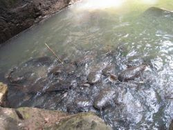

Lac sacré de Dafra

Le lac sacré de Dafra est un lieu de pélerinage renommé.Avant d'entreprendre le voyage, le pèlerin est informé des interdits du site,notamment l'interdiction de la couleur rouge. pour réussir son projet le pèlerin fait appel à un ancien,le plus souvent un devin ou tout autre vieux pouvant sacrifier.Le pélerinage s'effectue pour reparer une offre au Dafra dans la tradition.Mais de plus en plus,certaines personnes font le ^pélerinage pour d'autres raisons:recherche de fortune,du bien etre,de santé,de la fertilé de la femme ou pour remercier les esprits d'avoir exaucé une demande.